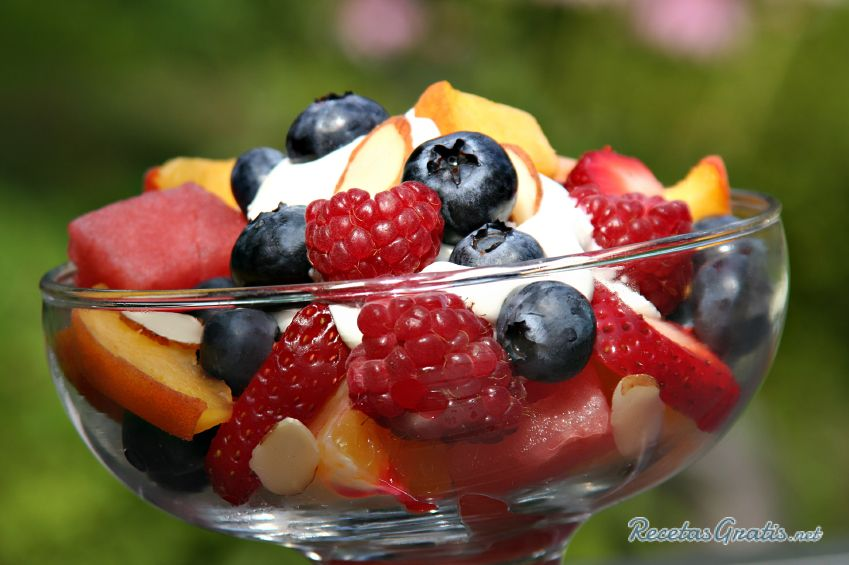
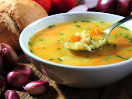
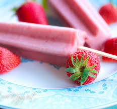

Lista de compras
Esta es una lista de compras con la cual podras hacer recetas faciles para compartir
1. Frutas

🍎 Manzana =
🍌 Banano
🍊 mandarina
🍐 pera
🍍 Piña
Ensalada de frutas
2. verduras

Brocoli
Auyama
Papa
verdura picada
arracacha
Sopa
3. Helado casero

🍓 Fresas
Leche de coco
🍯 Miel
Esencia de vainilla
🍧 Helados caceros
 Brocoli
Brocoli Papa
Papa Leche de coco
Leche de coco